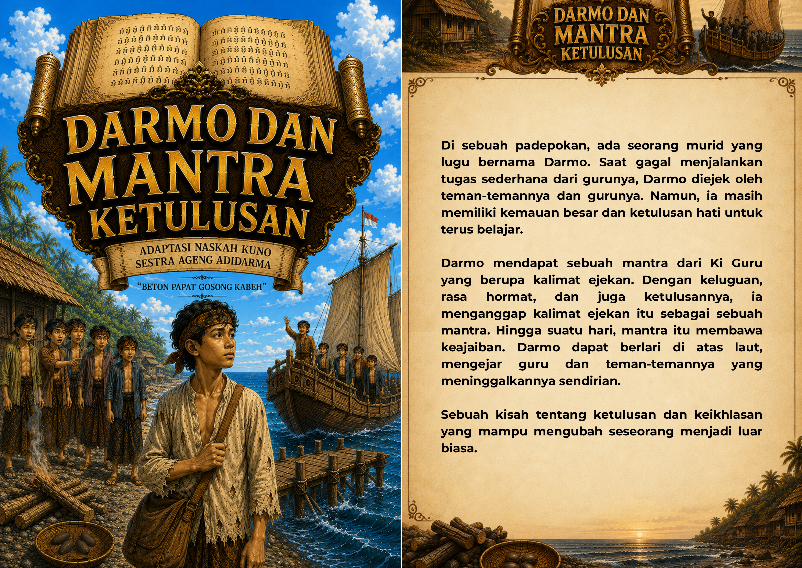

Penutup
Kekuatan tumbuh dari hati yang tulus.
Kepercayaan, usaha, dan keberanian untuk meminta maaf menjadi inti perjalanan Darmo.

Geser untuk melihat halaman berikutnya
Cerita bergambar
Ikuti Darmo dari dermaga hingga mantra ketulusan.
Audio keseluruhan akan mulai dari tombol ini jika rekaman sudah tersedia.